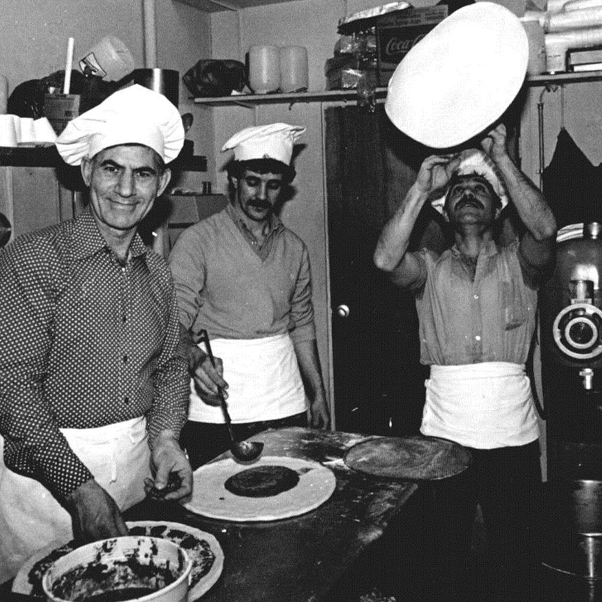

Bine ati venit pe pagina pizzeriei noastre!
Istoria noastra incepe in Italia, unde fondatorul nostru a invatat arta de a face pizza de la bunica lui. Acesta a adus cu el reteta secreta si tehnica de preparare a aluatului atunci cand s-a mutat in Statele Unite ale Americii si a inceput sa gateasca pizza pentru comunitatea locala.
Motivatia noastra este de a servi cea mai buna pizza din oras. Fiecare pizza este facuta la comanda si gatita la cuptorul nostru, pentru a-i asigura o crusta crocanta si o baza pufoasa.
Suntem mandri de profesionalismul nostru, iar personalul nostru este bine antrenat si prietenos. Alegem ingrediente atent, iar fiecare pizza este gatita cu pasiune si atentie la detalii.

Am creat o atmosfera primitoare si confortabila, unde puteti savura pizza noastra delicioasa impreuna cu prietenii si familia.
Deasemenea, suntem constienti ca in zilele noastre, clientii nostri isi doresc o experienta de cumparare online rapida si convenabila. De aceea, ne-am creat site-ul web cu aceeasi grija si atentie la detalii ca si pentru pizzeria noastra fizica.
Pe site-ul nostru, veti gasi meniul complet al pizzeriei noastre, unde puteti comanda pizza preferata.
program
Cand sa ne vizitezi?
Pizzeria noastra este deschisa:
Duminica - Vineri: 8:00 - 24:00
Sambata: Închis
Poti sa comanzi pizza acasa:
Duminica - Vineri: 10:00 - 24:00
Sambata: Închis
Aluatul nostru de pizza este preparat zilnic, folosind doar făînă de grâu de cea mai bună calitate, drojdie proaspătă și apă filtrată.
Fiecare porție de aluat este lăsată să crească lent și apoi este întinsă manual în formă de pizza. Astfel, crustă noastră devine crocantă și aromată, cu o baza pufoasă și delicioasă.

Sosul nostru de pizza este făcut în casă, folosind doar roșiile cele mai proaspete și mai coapte. Acesta este îmbunătățit cu ierburi și condimente proaspete, precum busuiocul, oregano și usturoiul, pentru a-i oferi o aromă și gust intens.
Cașcavalul folosit pentru pizza noastră este de înalta calitate și proaspăt ras. Alegem cu grijă diferite tipuri de cășcaval, precum mozarella, parmezanul,brie pentru a crea combinații delicioase de gusturi.

Carnea noastră este proaspătă și nu conține conservanți sau aditivi artificiali. Alegem cu grijă cele mai bune și mai gustoase tipuri de carne, cum ar fi salamul sau pepperoni-ul , și le preparam cu atenție pentru a oferi o aromă și gust intens.
În plus, suntem conștienți că unele persoane preferă să evite carnea roșie, motiv pentru care oferim și opțiuni cu carne albă, cum ar fi puiul și curcanul. Acestea sunt la fel de gustoase și satisfăcătoare, dar cu un conținut scăzut de grăsimi și calorii.